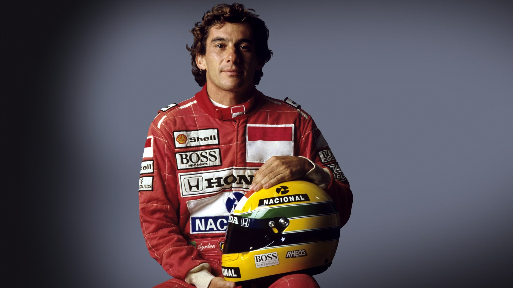
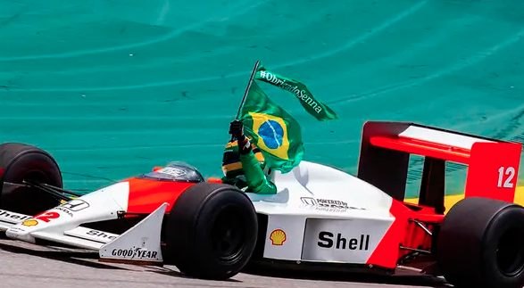

♙
Entre na pista
Digite seu nome para receber uma mensagem personalizada.
🏁 Bem-vindo à página de Ayrton Senna!
FÓRMULA 1 • BRASIL • LENDA
Velocidade, coragem e paixão. Ayrton Senna é apresentado nesta página como um símbolo de dedicação ao automobilismo e de inspiração para diferentes gerações.
CONHEÇA SUA TRAJETÓRIA →
Digite seu nome para receber uma mensagem personalizada.
🏁 Bem-vindo à página de Ayrton Senna!
Clique no botão para deixar sua curtida em homenagem ao piloto.
TRAJETÓRIA
Ayrton Senna da Silva nasceu em 21 de março de 1960, em uma família brasileira abastada onde, junto com seu irmão e irmã, teve uma criação privilegiada. Ele nunca precisou correr por dinheiro, mas sua profunda necessidade de competir começou com uma paixão por um mini kart que seu pai lhe deu quando ele tinha quatro anos. Quando menino, os destaques da vida de Ayrton eram as manhãs de Grand Prix, quando ele acordava tremendo de expectativa diante da perspectiva de ver seus heróis da Fórmula 1 em ação na televisão. Aos 13 anos, ele correu de kart pela primeira vez e venceu imediatamente. Oito anos depois, ele foi para as corridas de monopostos na Grã-Bretanha, onde, em três anos, conquistou cinco campeonatos. Em 1984, estreou na Fórmula 1 com a Toleman. Em Mônaco, seu sensacional segundo lugar atrás do McLaren de Alain Prost, sob chuva torrencial, foi a confirmação do talento fenomenal que conquistaria o esporte.
Decidindo que os recursos limitados de Toleman eram insuficientes para sua ambição imponente, Senna rescindiu seu contrato e, em 1985, mudou-se para a Lotus, onde, em três temporadas, largou da pole 16 vezes e venceu seis corridas. Tendo alcançado os limites da Lotus, decidiu que o caminho mais rápido seria com a McLaren, onde foi em 1988 e permaneceu por seis temporadas, vencendo 35 corridas e três campeonatos mundiais. Em 1988, quando a McLaren-Honda venceu 15 das 16 corridas, Senna venceu seu companheiro de equipe Alain Prost por oito vitórias a sete, conquistando seu primeiro título de piloto. A partir daí, os dois grandes pilotos se tornaram protagonistas de uma das disputas mais marcantes da Fórmula 1. Em 1989, Prost conquistou o título após um incidente com Senna em Suzuka. Em 1990, Senna conquistou seu segundo campeonato após um novo confronto com Prost na primeira curva de Suzuka. O terceiro título de Senna, em 1991, confirmou ainda mais seu domínio como piloto. Algumas de suas melhores atuações vieram em seu último ano com a McLaren, após o qual ele se transferiu para a Williams para a temporada de 1994. No dia 1º de maio de 1994, o brasileiro se chocou contra o muro na curva Tamburello do GP de Ímola, na Itália, e acabou falecendo.

FÓRMULA 1
Ayrton Senna construiu uma das trajetórias mais marcantes da história
do automobilismo. Ao longo de sua carreira na Fórmula 1, conquistou
três campeonatos mundiais, venceu 41 Grandes Prêmios e alcançou
65 pole positions, números que demonstram seu talento, sua velocidade
e sua competitividade nas pistas.
Desde os primeiros anos de sua carreira, Senna chamou a atenção por
sua habilidade ao volante, sua dedicação e sua determinação em buscar
sempre o melhor resultado. Sua capacidade de conduzir em condições
difíceis, especialmente em pistas molhadas, tornou-se uma de suas
características mais reconhecidas. Em cada corrida, demonstrava uma
combinação de técnica, concentração e coragem que marcou sua passagem
pela Fórmula 1.
Os três campeonatos mundiais conquistados em 1988, 1990 e 1991
representam alguns dos momentos mais importantes de sua carreira.
Além dos títulos, suas vitórias e disputas nas pistas proporcionaram
momentos que ficaram registrados na memória dos fãs do automobilismo.
As 65 pole positions conquistadas ao longo de sua carreira também
demonstram sua capacidade de alcançar um desempenho excepcional nas
classificações.
Senna também protagonizou grandes rivalidades e disputas que marcaram
uma geração da Fórmula 1. Suas batalhas nas pistas despertaram a
atenção de fãs em diferentes partes do mundo e contribuíram para
transformar suas corridas em acontecimentos acompanhados por milhões
de pessoas.
Mais do que seus números e troféus, Ayrton Senna deixou um legado
baseado na dedicação, na busca pela excelência e na paixão pelo
automobilismo. Sua trajetória ultrapassou os limites das pistas e
fez com que seu nome se tornasse conhecido mundialmente. Sua história
continua sendo lembrada por diferentes gerações, mantendo viva a
importância de suas conquistas para o esporte.
Mesmo décadas após sua última corrida, seus feitos continuam presentes
na história da Fórmula 1. As vitórias, os títulos, as pole positions
e os momentos inesquecíveis construíram uma trajetória que permanece
como parte importante da história do automobilismo brasileiro e
mundial. Ayrton Senna não deixou apenas estatísticas: deixou uma
história marcada por talento, dedicação, determinação e paixão pelas
corridas.
O primeiro título de Ayrton Senna na Fórmula 1 foi justamente em sua temporada de estreia com a McLaren. A vitória no GP do Japão, em Suzuka, marcou a consagração do piloto em uma temporada decidida no detalhe contra o francês Alain Prost, seu companheiro de equipe e que se tornaria seu grande rival no automobilismo. No treino classificatório, Senna garantiu a pole. Contudo, no dia da prova, seu carro não saiu do lugar no momento da largada e ele perdeu 16 posições. Com 15 ultrapassagens, o brasileiro concluiu uma vitória marcante para celebrar sua primeira conquista mundial.
Depois de ver Prost conquistar o campeonato em 1989, Senna voltou com força para recuperar o título em 1990. Com o francês na Ferrari, ambos brigaram pelo Mundial até o fim da temporada. No GP do Japão, o brasileiro chegou com vantagem na classificação e largou na pole position, mas viu Prost sair na frente na hora da largada. Senna reagiu e, logo na primeira curva, os dois bateram. O abandono dos dois da corrida deu a Senna o bicampeonato. No ano anterior, Prost havia conquistado o título após uma colisão com Senna no mesmo GP do Japão.
Em 1991, seu grande competidor não foi Prost, mas sim Nigel Mansell. Aquela temporada marcou a primeira vez em que Ayrton Senna subiu no lugar mais alto do pódio no GP de Interlagos, no Brasil. Mais uma vez, a conquista foi decidida no GP do Japão. Senna largou em segundo, mas viu Mansell abandonar a prova na décima volta. Com o título garantido, ele abriu passagem, já na última volta, para que seu colega Gerhard Berger, da McLaren, pudesse conquistar seu primeiro triunfo na escuderia.
Campeonatos Mundiais
1988, 1990 e 1991.Vitórias
Durante sua carreira na Fórmula 1.Pole Positions
Conquistadas na Fórmula 1.